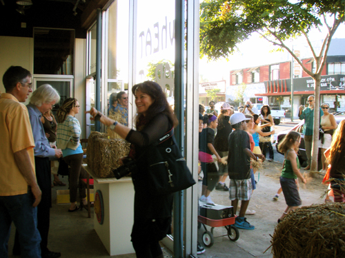
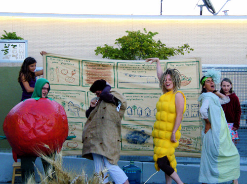
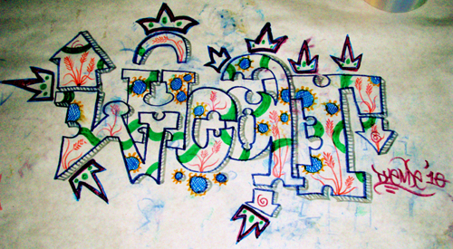

Flash mob outside of the Art Produce Gallery

Flash mob outside of the Art Produce Gallery

Flash mob outside of the Art Produce Gallery
Jefferson lot harvest at the Art Produce Gallery
"whEAT hARvesT" exhibit at the Art Produce Gallery
(Photo courtesy of Stephanie Weaver) 
Inside APG during the Sept. 11th event
Wheat heads on the wall of the APG exhibit
Deteriorating bale outside the Art Produce Garden
(Photo courtesy of Stephanie Weaver)
Threshing table in the Art Produce Garden
Bicycle-powered mill in the Art Produce Garden
Captain makes himself a wheat fort
Veggie Monologues performs at the Sept. 11th event

Veggie Monologues performs at the Sept. 11th event 
Word art by Christian
Gallery event on October 9th
(Photo courtesy of Hilary Dufour)
PreviousNext